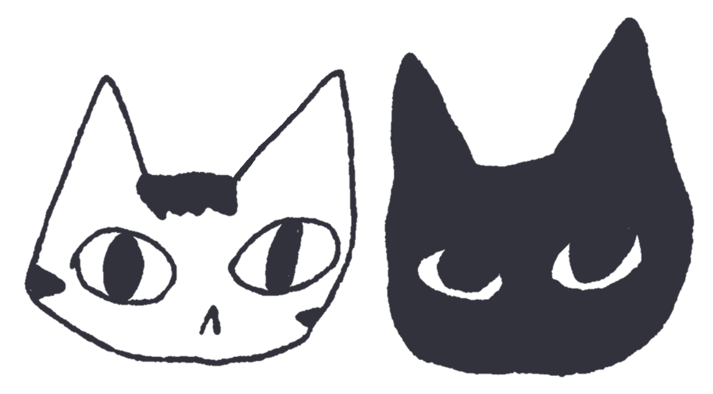

Dos Gatos Press
Tienda
Herramientas
Contacto
Nosotros
foto persona 1
Nombre 1
Co-founder
Instagram
Website
foto persona 2
Nombre 2
Co-founder
Instagram
Website
Los jefes
gato 1
Nombre gato 1
CEO
gato 2
Nombre gato 2
CTO
_ __ / \_ / _\ / \ / / \ / _ \ / / /\ \ / / \ \/ / / \_\ / / \ /\/ / __ \_\/ /\/ /\ \ / / \/_/__\_\ \_\ /_/ \/ \/
Hacemos cosas que nos gustan y colaboramos con quien tenga ganas.
Escribinos →